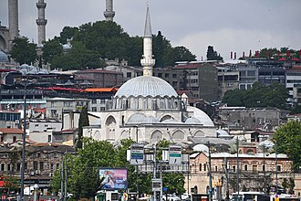

概要
La mosquée de Rüstem Pacha est une mosquée située dans le quartier d'Eminönü à Istanbul en Turquie.
جامع رستم باشا هو جامع يقع في منطقة مرمرة الميناء الرئيسي من ايمينونو في اسطنبول، صمم البناء المعماري العثماني الأشهر: معمارسنان.
The Rüstem Pasha Mosque is an Ottoman mosque located in the Hasırcılar Çarşısı in the Tahtakale neighborhood of the Fatih district of Istanbul, Turkey, near the Spice Bazaar. Named after Rüstem Pasha, who served as Grand Vizier of the Ottoman Empire under Sultan Suleiman I, it was designed by the Ottoman imperial architect Mimar Sinan and completed in around 1563.
Rüstem Paşa Camii, İstanbul, Fatih ilçesi, Tahtakale semtinde Hasırcılar Çarşısı içinde yer alan cami.
Masjid Rüstem Pasha adalah sebuah masjid peninggalan Kesultanan Utsmaniyah yang berada di kawasan Hasırcılar Çarşısı, distrik Fatih, Provinsi Istanbul, Turki, dekat Spice Bazaar. Masjid ini dinamai untuk menghormati Rüstem Pasha–seseorang yang menjabat sebagai Wazir Agung Kekaisaran Ottoman di bawah Sultan Suleiman I–dan kemudian masjid ini dirancang oleh arsitek Kekaisaran Ottoman, Mimar Sinan, yang pembangunannya selesai sekitar tahun 1563.
Die Rüstem-Pascha-Moschee ist eine osmanische Moschee im Stadtteil Eminönü in Istanbul.
La mezquita de Rüstem Paşha es una mezquita otomana localizada en Hasırcılar Çarşısı en el distrito de Eminönü, Estambul, Turquía.
La moschea di Rüstem Pascià è una moschea ottomana di Istanbul, Turchia. Si trova nell'affollato quartiere commerciale di Tahtakale, nel distretto di Eminönü, nella penisola storica di Istanbul. Nelle sue vicinanze vi sono il Bazar Egiziano e il Ponte di Galata.
A Mesquita de Rüstem Paxá é uma mesquita otomana situada no bairro de Eminönü, distrito de Fatih, Istambul, Turquia. É famosa principalmente pelos seus azulejos de İznik, considerados por muitos os mais belos do seu tipo. É uma das inúmeras obras do arquiteto Mimar Sinan.
De Rüstem Pasha-moskee is een moskee in de Hasırcılar Çarşısı (weversmarkt) dicht bij de oever van de Gouden Hoorn in het district Fatih in Istanboel. Het gebouw werd ontworpen door Mimar Sinan, hofarchitect van enkele sultans, en voltooid rond 1563.
リュステム・パシャ・モスク は、トルコ、イスタンブールのエミノニュ（Eminönü）地区にあるモスクである。オスマン帝国、スレイマン1世の時代に建造された。
뤼스템 파샤 모스크(튀르키예어: Rüstem Paşa Camii 뤼스템 파샤 자미[*])는 터키 이스탄불 에미뇌뉘 지역에 위치한 모스크이다. 오스만 제국 쉴레이만 1세 시대에 건축되었다.
Мечеть Рустема-паши — мечеть в Стамбуле. Мечеть расположена в новой части города на площади Новой мечети в районе Эминёню и Галатского моста.
Ang Masjid Rüstem Pasha ay isang masjid na Otomanong matatagpuan sa Hasırcılar Çarşısı sa kapitbahayan ng Tahtakale ng distrito ng Fatih, Istanbul, Turkiya. Idinisenyo ito ng imperyal na arkitektong Otomano na si Mimar Sinan at nakumpleto sa bandang 1563.
Moscheea lui Rüstem Pașa este o moschee din Istanbul, Turcia. Ea se află în apropiere de Moscheea Suleymaniye.
地図上の位置
資料とリンク
- Wikipédia — Français
- Wikipédia — العربية
- Wikipédia — English
- Wikipédia — Türkçe
- Wikipédia — Bahasa Indonesia
- Wikipédia — اردو
- Wikipédia — Deutsch
- Wikipédia — Español
- Wikipédia — Italiano
- Wikipédia — Português
- Wikipédia — Nederlands
- Wikipédia — 中文
- Wikipédia — 日本語
- Wikipédia — 한국어
- Wikipédia — Русский
- Wikipédia — Filipino
- Wikipédia — Română
- Wikidata — Q1137511
データ：ウィキデータ（CC0）、3か月ごとに更新。年は、その建物について知られている最も古い建設年です。のちにモスクになった建物（アヤソフィアなど）の場合は、元の建物の建設年です。写真：ウィキメディア・コモンズ。作者とライセンスは各写真のページにあります。